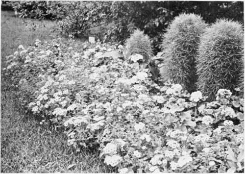

Chapter XXI. Hints On Flower Gardens
Description
This section is from the book "Landscape Gardening", by Andrew Jackson Downing. Also available from Amazon: Landscape Gardening.
Chapter XXI. Hints On Flower Gardens
WE are once more unlocked from the chilling embraces of the Ice-King! April, full of soft airs, balm-dropping showers, and fitful gleams of sunshine, brings life and animation to the millions of embryo leaves and blossoms, that, quietly folded up in the bud, have slept the mesmeric sleep of a northern winter — April, that first gives us of the northern states our proper spring flowers, which seem to succeed almost by magic to the barrenness of the month gone by. A few pale snowdrops, sun-bright crocuses, and timidly blushing mezereums, have already gladdened us, like the few faint bars of golden and ruddy light that usher in the full radiance of sunrise; but April scatters in her train as she goes out, the first richness and beauty that really belong to a temperate spring. Hyacinths, and daffodils, and violets, bespread her lap and fill the air with fragrance, and the husbandman beholds with joy his orchards gay with the thousand blossoms — beautiful harbingers of luscious and abundant crops.
All this resurrection of sweetness and beauty, inspires us with a desire to look into the flower garden, and to say a few words about it and the flowers themselves. We trust there are none of "our parish," who, though they may not make flower gardens, can turn away with impatient or unsympathizing hearts from flowers themselves. If there are such, we must, at the very threshold of the matter, borrow a homily for them from that pure and eloquent preacher, Mary Howitt:
"God might have made the earth bring forth Enough for great and small, The oak tree and the cedar tree, Without a flower at all.
* Original date of April, 1847.
"Our outward life requires them not — Then wherefore had they birth'? To minister delight to man, To beautify the earth.
"To comfort man, to whisper hope Whene'er his faith is dim; For who so careth for the flowers, Will much more care for him!"
Now, there are many genuine lovers of flowers who have attempted to make flower gardens — in the simplicity of their hearts believing it to be the easiest thing in the world to arrange so many beautiful annuals and perennials into "a living knot of wonders" — who have quite failed in realizing all that they conceived of and fairly expected when they first set about it. It is easy enough to draw upon paper a pleasing plan of a flower garden, whether in the geometric, or the natural, or the "gardenesque" style, that shall satisfy the eye of the beholder. But it is far more difficult to plant and arrange a garden of this kind in such a way as to afford a constant succession of beauty, both in blossom and leaf. Indeed, among the hundreds of avowed flower-gardens which we have seen in different parts of the country, public and private, we cannot name half-a-dozen which are in any considerable degree satisfactory.
The two leading faults in all our flower gardens, are the want of proper selection in the plants themselves, and a faulty arrangement, by which as much surface of bare soil meets the eye as is clothed with verdure and blossoms.
Regarding the first effect, it seems to us that the entire beauty of a flower garden almost depends upon it. However elegant or striking may be the design of a garden, that design is made poor or valueless, when it is badly planted so as to conceal its merits, or filled with a selection of unsuitable plants, which, from their coarse or ragged habit of growth, or their remaining in bloom but a short time, give the whole a confused and meagre effect. A flower garden, deserving the name, should, if possible, be as rich as a piece of embroidery, during the whole summer and autumn. In a botanical garden, or the collection of a curious amateur, one expects to see variety of species, plants of all known forms, at the expense of everything else. But in a flower-garden, properly so called, the whole object of which is to afford a continual display of beautiful colors and delicious odors, we conceive that everything should be rejected (or only most sparingly introduced), which does not combine almost perpetual blooming, with neat and agreeable habit of growth.
The passion for novelty and variety among the lovers of flowers, is as great as in any other enthusiasts. But as some of the greatest of the old painters are said to owe the success of their masterpieces to the few colors they employed, so we are confident the most beautiful flower gardens are those where but few species are introduced, and those only such as possess the important qualities we have alluded to.
Thus among flowering shrubs, taking for illustration the tribe of Roses, we would reject, in our choice flower garden, nearly all the old class of roses, which are in bloom for a few days and but once a year, and exhibit during the rest of the season, for the most part, meagre stems and dingy foliage. We would supply their place by Bourbons, Per-petuals, Bengals, etc., roses which offer an abundance of blossoms and fine fresh foliage during the whole growing season. Among annuals, we would reject everything shortlived, and introduce only those like the portulaccas, verbenas, petunias, mignonette, Phlox drummondii, and the like, which are always in bloom, and fresh and pretty in habit.*
After this we would add to the effect of our selection of perpetual blooming plants, by abandoning altogether the old method of intermingling species and varieties of all colors and habits of growth, and substitute for it the opposite mode of grouping or massing colors and particular species of plants. Masses of crimson and white, of yellow and purple, and the other colors and shades, brought boldly into contrast, or disposed so as to form an agreeable harmony, will attract the eye, and make a much more forcible and delightful impression, than can ever be produced by a confused mixture of shades and colors, nowhere distinct enough to give any decided effect to the whole. The effect of thus collecting masses of colors in a flower garden in this way, is to give it what the painters call breadth of effect, which in the other mode is entirely frittered away and destroyed.*
* Some of the most beautiful of the perpetual blooming plants for the flower-garden, are the salvias, bouvardias, scarlet geraniums, etc., properly green-house plants, and requiring protection in a pit or warm cellar in winter. Bedded out in May, they form rich flowering masses till the frosts of autumn. — A. J. D.
Fig. 37. Flower Bed — Phlox and Kochia.
* It is hard to believe now how far in advance of the times was Down-ing's doctrine of mass effects, here clearly enunciated, — so far in advance of the times, indeed, that Downing himself did not always rise to it. — f. a. w.
This arranging plants in patches or masses, each composed of the same species, also contributes to do away in a great degree with the second fault which we have alluded to as a grievous one in most of our flower gardens — that of the exhibition of bare surface of soil — parts of beds not covered by foliage and flowers.
In a hot climate, like that of our summers, nothing is more unpleasing to the eyes or more destructive to that expression of softness, verdure, and gayety, that should exist in the flower garden, than to behold the surface of the soil in any of the beds or parterres unclothed with plants. The dryness and parched appearance of such portions goes far to impair whatever air of freshness and beauty may be imparted by the flowers themselves. Now whenever beds are planted with a heterogeneous mixture of plants, tall and short, spreading and straggling, it is nearly impossible that considerable parts of the surface of the soil should not be visible. On the contrary, where species and varieties of plants, chosen for their excellent habits of growth and flowering, are planted in masses, almost every part of the surface of the beds may be hidden from the eye, which we consider almost a sine qua non in all good flower gardens.
Following out this principle — on the whole perhaps the most important in all flower gardens in this country — that there should, if possible, be no bare surface soil visible, our own taste leads us to prefer the modern English style of laying out flower gardens upon a groundwork of grass or turf, kept scrupulously short. Its advantage over a flower garden composed only of beds with a narrow edging and gravel walks, consists in the greater softness, freshness and verdure of the green turf, which serves as a setting to the flower beds, and heightens the brilliancy of the Mowers themselves. Still, both these modes have their merits, and each is best adapted to certain situations, and harmonizes best with its appropriate scenery.
There are two other defects in many of our flower gardens, easily remedied, and about which we must say a word or two in passing.
One of these is the common practice, brought over here by gardeners from England, of forming raised convex beds for flowering plants. This is a very unmeaning and injurious practice in this country, as a moment's reference to the philosophy of the thing will convince any one. In a damp climate, like that of England, a bed with a high convex surface, by throwing off the superfluous water, keeps the plants from suffering by excess of wet, and the form is an excellent one. In this country, where most frequently our flower gardens fail from drouth, what sound reason can be given for forming the beds with a raised and rounded surface of six inches in every three feet, so as to throw off four-fifths of every shower? The true mode, as a little reflection and experience will convince any one, is to form the surface of the bed nearly level, so that it may retain its due proportion of the rains that fall.
Next to this is the defect of not keeping the walks in flower gardens full of gravel. In many instances that we could name, the level of the gravel in the walk is six inches below that of the adjoining bed or border of turf. This gives a harsh and ditch-like character to the walks, quite at variance with the smoothness and perfection of details which ought especially to characterize so elegant a portion of the grounds as this in question. "Keep the walks brimful of gravel," was one of the maxims most strongly insisted on by the late Mr. Loudon, and one to which we fully subscribe.*
* Originally this essay closed with a description, somewhat detailed, of a flower garden belonging to Baron von Hugel near Vienna, drawn from a German magazine, which description has been dropped from the present edition as having no practical interest at this time. — F. A. W.
Continue to:
- prev: A Word In Favor Of Evergreens. Continued
- Table of Contents
- next: Chapter XXII. A Chapter On Roses